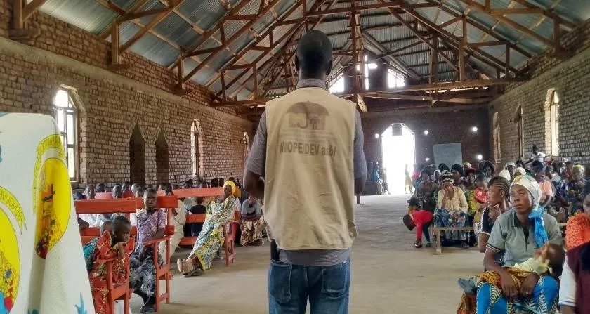
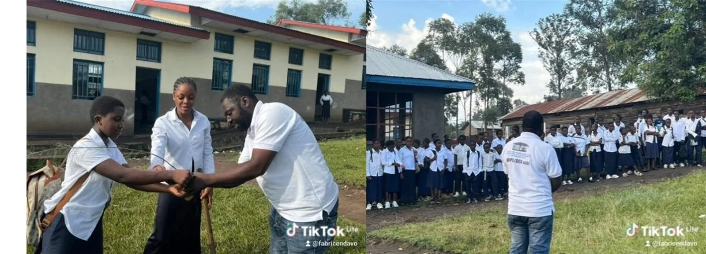
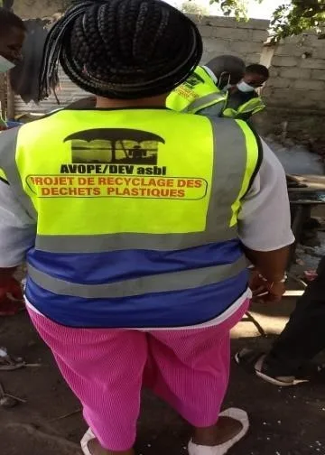

Mission
Faire de la protection de l’environnement un outil de développement et de relèvement socio-économique par une gestion participative des ressources naturelles.

Nord-Kivu & Ituri · Depuis 2010
AVOPEDEV agit avec les populations pour faire de la protection de l’environnement un véritable outil de relèvement socio-économique.

Qui sommes-nous ?
L’Action des Volontaires pour la Protection de l’Environnement et de Développement — AVOPEDEV — œuvre depuis 2010 à l’amélioration durable des conditions de vie des populations vulnérables.
Notre approche repose sur la mobilisation, la sensibilisation et la participation active des bénéficiaires. Elle relie protection de l’environnement, sécurité alimentaire, protection communautaire, gouvernance, paix et relance économique.
En savoir plus sur AVOPEDEVNotre boussole
AVOPEDEV place les communautés au cœur de la gestion durable des ressources et de leur propre développement.
Faire de la protection de l’environnement un outil de développement et de relèvement socio-économique par une gestion participative des ressources naturelles.
Des communautés qui retrouvent leur bien-être physique, mental et social dans un environnement sain et sans faim.
Redevabilité, transparence et probité, dans le respect des principes humanitaires.
Nos domaines

Prévenir les maladies hydriques et améliorer durablement les pratiques d’hygiène.
Découvrir ce domaine
Reboisement, économie circulaire et gestion durable des ressources naturelles.
Découvrir ce domaine
Intrants, techniques agricoles améliorées et renforcement des producteurs.
Découvrir ce domainePrévention des violences, droits humains, alertes et mécanismes locaux de protection.
Découvrir ce domaine
Dialogue communautaire, participation citoyenne et consolidation de la paix.
Découvrir ce domaine
Autonomisation, entrepreneuriat et initiatives économiques communautaires.
Découvrir ce domaineAgir concrètement
Chaque action présentée est documentée dans le profil institutionnel d’AVOPEDEV.
Plus de 50 000 plantules forestières ont été produites et distribuées dans des zones du Nord-Kivu et de l’Ituri.

Distribution de semences améliorées, formations culturales et renforcement des organisations paysannes.

Collecte, recyclage et fabrication de pavés écologiques pour réduire la pollution environnementale.
Sur le terrain


Actualités
Les nouvelles officielles publiées par AVOPEDEV seront présentées ici.
Cette section sera mise à jour dès qu’une nouvelle officielle aura été validée.
Construisons des solutions durables
Échangeons autour des besoins des communautés et des possibilités de partenariat.